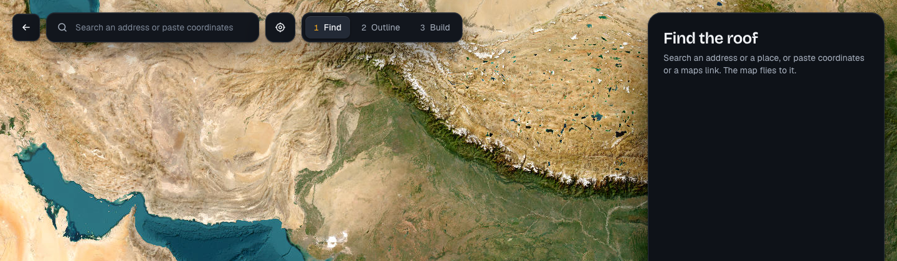
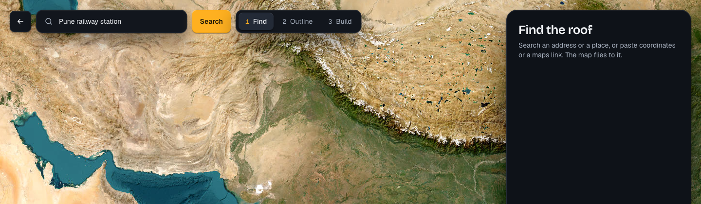
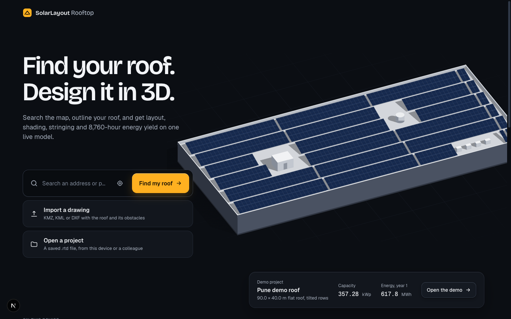

Beside Find's search, one place. Before anything is typed: Use my location, the square of 48 (now on desktop too, its tooltip “Use my location”). With something typed: Search, primary, 48 high; it does what Enter does: the words searched, coordinates or a maps link taken. Once a place is found its name stands in the field, and nothing beside it. On Home the well holds Use my location (a quiet icon of 44) before Find my roof while nothing is typed; a place found leads to Find there. Refused or not available, the location says so under the field, as on the touch sizes today.


